5. Bölüm - EINSTEIN GENEL GÖRELİLİĞİ
33-Genel görelilik nedir? Özel göreliliğin nesi özeldi?
- Hımm… Anlaşılan özel göreliliği bitirdik, genel göreliliğe başlayacağız... Peki, genel görelilik nedir? Bir diğer
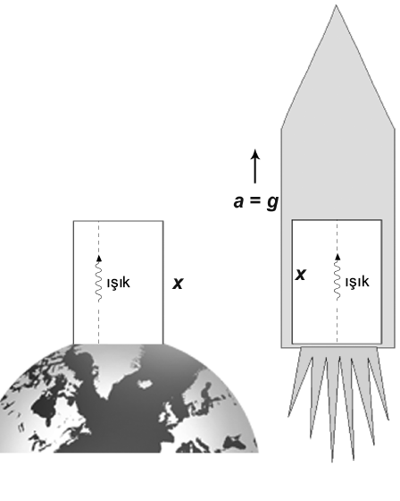
Şekil 34. Eşdeğerlik ilkesi ve çekimsel kırmızıya kayma: Sağ taraftaki asansör, boş uzayda g ivmesiyle yukarı doğru hızlanmaktadır. Asansörün tabanından tavanına bir ışık hüzmesi gönderilirse, tavanda frekans daha düşük algılanacaktır. Çünkü, ışığın tabandan tavana yolculuğu bir süre alacağından ve bu süre içinde asansörün hızı artacağından, tavanın
ışığı aldığı andaki hızı, tabanın ışığı gönderdiği andaki hızından büyüktür; bu yüzden Doppler etkisi algılanan frekansı küçültecektir. Eşdeğerlik ilkesi, sabit ivmeyle hızlanan bir koordinat sisteminin sabit bir genelçekim alanına
eşdeğer olduğunu söyler. Dolayısıyla soldaki durumda, yani dünya yüzeyinde sabit duran bir asansörde de ışığın frekansının aynı miktarda azalmasını bekleriz.
deyişle, özel göreliliğin nesi özel?
- Koordinat sistemleri özel.
Şöyle ki, Soru 21’de de bahsettiğimiz gibi, özel görelilik, yalnızca eylemsiz koordinat sistemleri kullanır; hatta Lorentz dönüşümlerini gördüğümüz şekliyle kullanmak için, koordinat sisteminin ayrıca kartezyen olması gerekir. Genel görelilik ise, eğrisel koordinatlar dahil olmak üzere, herhangi bir koordinat sistemini kullanabilmemizi sağlar.
Özel görelilikten sonra Einstein’ın cevaplamak istediği soru, genelçekim kuramının nasıl değişmesi gerektiğiydi. Değişmesi neden gerekiyordu diye soracaksın, biliyorum; neden şu: Newton’un genelçekim yasasına göre, etki anlık olarak iletiliyordu. Soru 9’daki yasayı incelersen, herhangi bir gecikme etkisinden bahsettiğini göremezsin. Halbuki, özel göreliliğe göre hiçbir fiziksel etki ışıktan hızlı iletilemez. Bu çelişkinin giderilmesi gerekiyordu.
- Çekim etkisinin anlık iletimi kavramına bir örnek verir misiniz?
- Olmaz ama, Güneş’in bir anda yok olduğunu düşün. Eğer Newton genelçekimi doğru ise, yani anlık etki iletimi varsa, Dünya anında yörüngesinden çıkar. Özel görelilik ise, bu yok olmanın etkisinin en fazla ışık hızıyla iletileceğini, yani Dünya’nın Güneş yok olduktan sonra yaklaşık 8 dakika daha, Güneş varmış gibi aynı yörüngede devam etmesi gerektiğini söyler.
- Ama bu, genelçekim yasasının ne olduğuna göre değişmez mi?
- Tam doğru ifade edemedim, en az sekiz dakika demem gerekiyordu; çünkü etki en fazla ışık hızıyla iletilebilir. Bunu söylemek için yasayı bilmek gerekmez; çünkü görelilik bir ilkedir, önem olarak yasaların üzerindedir.
- Bu çelişkiyi ortadan kaldırmak için herhalde genelçekim değişmiştir. Adam özel göreliliği daha yeni geliştirmiş, onu değiştirmez herhalde...
- Aslında özel görelilik değişiyor denemez, sınırları belirleniyor (Soru 4’ün cevabını tekrar okumak isteyebilirsin) ya da epey daha genel bir kuramın bir özel hali olarak anlaşılıyor. Biraz ileride anlayacağın gibi, kartezyen koordinatlar düz uzay-zamanı betimler; yani özel görelilik, düz uzay-zamandaki fizik için geçerlidir. Einstein, konuşacağımız düşünce deneyleri ve gözlemler ile düz uzay-zaman ile genelçekimin uyumsuz olduğuna karar verdi. Yani uzay-zamanın eğri olması gerekiyordu. Bu da bizi eğrisel koordinatlar kullanmaya zorlar, çünkü eğri uzay-zaman kartezyen koordinatlarla betimlenemez.
Öte yandan, uzay-zaman ne kadar eğri olursa olsun, yeterince küçük ölçekte düz gibi düşünülebilir. Dünya yüzeyindeyken dünyanın düz görünmesi gibi. Dolayısıyla yerelde özel görelilik geçerlidir. Ancak, eğrilikten dolayı, bir
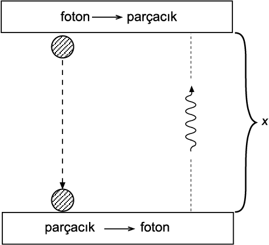
Şekil 35. Çekimsel kırmızıya kayma için alternatif düşünce deneyi: g şiddetindeki çekim alanında bir foton yukarıya tırmanmaktadır. x yüksekliğine geldiğinde, foton bir makineye çarpar ve makine onun tüm enerjisini kütleye dönüştürerek bir parçacık üretir. Dolayısıyla bu parçacık o noktada durağandır ve kütlesi m = hf/c2 olur. Tabii ki parçacık çekim alanı içinde düşmeye başlar. x kadar düştüğünde, ilkinin tersini yapan bir makineye çarpar ve bu makine de onun tüm enerjisini kullanarak yukarı yönelik bir foton üretir, böylece döngü yeniden başlar.
Ancak, parçacığın kinetik enerjisi aşağıda, yukarıdakinden mgx kadar fazla olduğuna göre (parçacığın hızı düşük olduğundan, klasik formülleri kullanabiliriz), fotonun yukarı çıkarken kinetik enerji kaybetmesi gerekir. Eğer kaybetmezse, her turdaki foton enerjisi, bir öncekinden mgx kadar fazla olur, yani yoktan enerji üretmiş oluruz!
yerel gözlemcinin (burada artık koordinat sistemini değil, bir kişiyi ya da ölçüm aletini kastediyoruz) düz harekete başladığını gördüğü bir cisim, biraz gidince “yön değiştirebilir”, çünkü yerel gözlemcinin kartezyen koordinat sistemi uzaklara gittikçe, tabiri caizse sapıtabilir. Bir yaprak kâğıda bir koordinat sistemi çizip kâğıdı bir portakala sardığını düşün. Bir tarafını buruşturmadan yapamazsın.
Einstein, bu yön değiştirmelerin genelçekim etkilerinden ayırt edilemeyeceğini anladı. Bunun doğal sonucu da
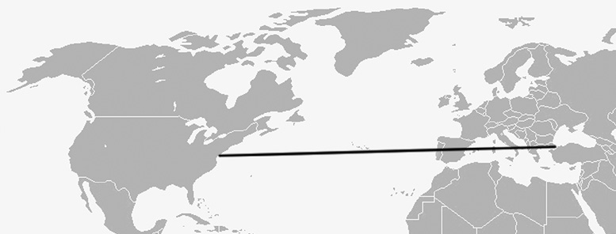
Şekil 36. İstanbul, New York ve ikisini bağlayan doğu-batı yönündeki yol. Ama uçaklar böyle gitmez.
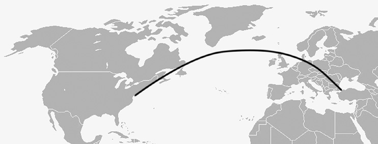
Şekil 37. Tipik bir İstanbul - New York uçak rotası.
genelçekim diye düşündüğümüz olgunun, uzay-zamanın geometrik özelliklerinin bir sonucu olduğudur.
- Bu geometrik özellikler nereden geliyor?
- Haklısın, kuramı tamamlamak için, bunun yasalarına da ihtiyacımız var. Kısa cevap, madde tarafından büyük ölçüde belirlendiği. Sonuçta Newton’un genelçekim kuramında da bir kütleyi etkileyen çekim alanı, etraftaki diğer kütleler, onların dağılımları ve mesafeleri cinsinden verilmiyor mu?
Ancak, burada iş biraz daha karışık. Kütle dağılımı tek başına belirleyici olamaz, çünkü kütle ve enerji eşdeğer. O zaman kütle+enerji dağılımı lazım. Ama salt o da olamaz, çünkü bir koordinat sistemindeki enerji, bir başka koordinat sistemindeki momentuma katkıda bulunuyor. Bazı (şimdi girmeyeceğim) matematiksel nedenlerden dolayı, basınç ve benzer büyüklükler de giriyorlar işin içine.
Sonuç olarak, geometriyi belirleyen yasalar, 10 adet birbirine bağlı, doğrusal olmayan kısmi diferansiyel denkleme51 karşılık gelir. Bu denklemlerin bir tarafı (genellikle “sol taraf” denir) uzay-zamanın geometrik özelliklerinin fonksiyonlarıdır; karşı taraf ise, maddenin 10 farklı özelliğinin (kütle-enerji, momentum bileşenleri, vb.) uzay-zamandaki dağılımlarıdır. “Einstein denklemleri” denen bu denklemler genel halde son derece karmaşıktırlar 52; o kadar ki, Einstein bunları 1915’te geliştirdiğinde, ömrü boyunca çözüm bulunamayabileceğini düşündüğünü söylemiş; yılın sonunda ilk çözüm bulununca epey şaşırmıştır. Tabii bazı özel hallerde, denklemler epey basitleşebilmektedir.
51)Buna karşılık olarak Newton genelçekim kuramında, bir kütle dağılımının oluşturduğu çekim alanını veren yasa, bir adet doğrusal kısmi diferansiyel denkleme; klasik elektromanyetizmayı betimleyen Maxwell yasaları sekiz adet birbirine bağlı doğrusal kısmi diferansiyel denkleme karşılık gelir.
52)Einstein denklemlerinin en ayırıcı özelliği ve onları Maxwell denklemlerinden çok daha zor/karmaşık yapan, doğrusal olmamalarıdır.
Yani geometriyi maddenin 10 farklı özelliğinin dağılımları büyük ölçüde belirler.
- Neden “büyük ölçüde”?
- Çünkü madde olmadığı durumda bile, çok karmaşık çözümler bulunabiliyor. Bunlara boşluk (vakum) çözümleri diyoruz. Sonuçta, boşlukta da çekim varolabiliyor; yani uzay-zamanın geometrisi basit olmayabilir, değil mi?
Özetlersek, genel görelilik, hem eğrisel koordinatlarda ve/veya eğri uzay-zamanlarda fizik yasalarını kullanmanın bir yoludur, hem de bir genelçekim kuramıdır; üzerine başka bir kuvvet etki etmeyen cisimlerin hareketlerini, içinde bulundukları uzay-zamanın geometrik özellikleriyle açıklar. Bu geometriyi de “Einstein denklemleri” aracılı
ğıyla varolan madde belirler.
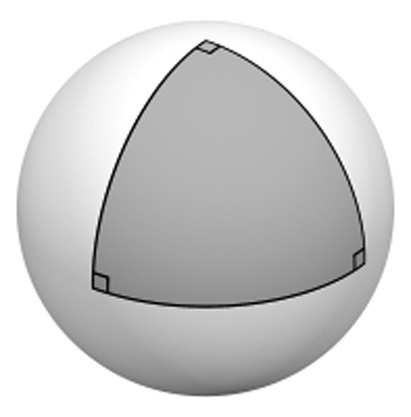
Şekil 38. Küre üzerinde bir üçgen.
34-Eşdeğerlik ilkesi nedir?
- Özelde ışığın hızının, genelde doğa yasalarının hepsinin tüm eylemsiz gözlemciler için aynı olması, özel göreliliğin çıkış noktasıydı. Genel görelilik için de benzer şekilde kolayca ifade edilebilen bir çıkış noktası var mı?
- Genel göreliliğin çıkış noktasına “eşdeğerlik ilkesi” deniyor. Bu ilkenin ilk şekli, bilimsel yöntemi yerçekimine uygulayan ilk kişi olan Galileo’nun gözlemine kadar gider—
- Gene mi Galileo?
- İlginç, değil mi?.. Galileo, tüm cisimlerin (hava direnci ihmal edilebildiğinde) aynı şekilde ve sabit ivme ile düştükleri gerçeğini gözlemlemişti. Bu da ancak, - ve F =mg denklemlerindeki53 m’lerin birbirlerini sadeleştirmeleriyle mümkün. Aslında bunlar aynı olmayabilirdi; -’daki m, cismin eylemsizlik özelliğinin ölçüsüdür; F =mg’deki m ise cismin çekim alanı oluşturma ve başka bir cismin çekim alanından etkilenme özelliklerinin ölçüsüdür; birinciye eylemsizlik kütlesi (eski dilde: atalet kütlesi), ikinciye de çekimsel kütle denir. Bu ikisinin eşitliği, hatta özdeşliği eşdeğerlik ilkesinin ilk şeklidir:
53)Tabii ki bu ikinci denklemi de vektör olarak yazmak gerek.
Eşdeğerlik ilkesi (Galileo versiyonu): Bir cismin eylemsizlik kütlesi ile çekimsel kütlesi özdeştir.
- Bu aynı şekilde ve sabit ivmeyle düşme özelliği ne kadar iyi sınandı? Galileo’nun deneyleriyle kalmamıştır herhalde…
- Aslında bu işin deneyleri, cisimler düşürülerek değil, sarkaç veya benzeri salınan sistemler incelenerek yapılıyor; böylece gözlem süresi uzatılarak deneyin duyarlılığı arttırılmış oluyor. Bunların tarihsel olarak en önemlisi, Macar fizikçi Eötvös tarafından 1906-1909 arasında yapıldı ve bu eşitliğin çok farklı kimyasal bileşimlere sahip cisimler için yedi hanelik duyarlılıkla sağlandığı bulundu.
- Bu özdeşliğin önemi ne?
- Bu özdeşliğin, sabit ivmelenen koordinat sistemleriyle ilgili ilginç bir sonucu var: Diyelim ki Soru 2’deki tren bu kez sabit hızlı olmasın da sabit ivmeyle hızlansın, ama çoban hâlâ eylemsiz olsun, gözlemlenen cisim de karga olsun. Trenin çobana göre ivmesi a1, karganın trene göre ivmesi a2 ve çobana göre ivmesi a olsun. Bu durumda a = a1 + a2 geçerlidir. Bunu anlamak için Soru 10’daki Şekil 15’i takip eden akıl yürütmeleri, u’nun sabit olmayıp, sabit ivmeye sahip olması durumu için tekrarlayabiliriz; bağıntımız ivmelerin bir boyutta olmayıp, üç boyutlu vektörler olmaları durumunda da geçerlidir.
Şimdi, Newton’un ikinci yasası çobanın sisteminde geçerli olduğuna göre, -. Ancak, bu yasa makinistin sisteminde geçerli değil, çünkü -değil. Makinist a2 ivmesini ölçüyor, unutma. Ya ne geçerli? -. Yani makinist Newton’un ikinci yasasını kullanmakta ısrar ederse, -’lik bir ek kuvvet gözlemlediğini söylemek zorundadır. Bunlar, Soru 11’de de bahsettiğimiz sanal kuvvetler.
- Niye illa Newton’un ikinci yasasını kullanacağım diye ısrar etsin ki?
Bir kere, eylemsiz olmadığının farkında olmayabilir, örneğin penceresiz bir vagonda... İkincisi, hangi yasayı kullansın? Newton’un ikinci yasasını öğrenmişiz; ivmelenince yasayı değiştirmektense, yeni bir kuvvet düşünmek daha kolay. Üçüncüsü, yasayı “kullanmak” için illa denklem yazmamız gerekmez, bir ölçüde bu yasaları içselleştirmişizdir. Örneğin serbest vuruş kullanacak futbolcu, cebinden kâğıt-kalem ya da hesap makinesi çıkarıp, topun barajın üstünden aşarak kale direğinin altından geçmesi için gereken vuruş açısını ve hızını hesaplamaz; kendi vuruşu ile topun hareketi arasındaki ilişkiyi içselleştirmiştir. Zaten hesaplanmış olsa da, doğru yön ve hızda vurmak da ayrıca marifet ister. Benzer şekilde, gördüğümüz ivmeleri toplam kuvvet ile otomatik olarak ilişkilendiririz; yani yine Newton’un ikinci yasasını kullanmış oluruz...
Ancak, bu ek kuvvet, m ile orantılı! Genelçekim alanı gibi... Yani, örneğin yeryüzünde aşağıya bakan - vektörüne, - vektörü eklenmiş gibi. Ya da eylemsiz gözlemcimiz uzayda, her şeyden uzakta, “çekimsiz ortamda”, ivmeli gözlemci de aynı bölgede, ama sabit ivme ile hareket eden bir uzay gemisinin içinde olsun... İvmeli gözlemci, tüm cisimlere etki eden, kütle ile orantılı bir kuvvet gözlemler. Ama bu, genelçekim kuvvetinin tarifiyle aynıdır! (Şekil 33)
Eşdeğerlik ilkesi: (Eylemsiz bir koordinat sistemine göre) Sabit ivmelenen bir koordinat sistemi ile sabit bir genelçekim alanı birbirlerinden ayırt edilemez.
Örneğin, bindiğin asansör yukarı ivmelenmeye başladığında, kendini daha ağır hissedersin. Sanki yerçekimi kuvvetlenmiş gibi...
- Hatta ivmelenen asansördeki her türlü hesabı, sanki yerçekimi ivmesi a kadar artmış gibi yapabiliyoruz.
- Peki, asansör aşağı ivmelenirse, hele bunu g ivmesiyle yapar, yani düşerse?
- Bu kez yerçekimi ivmesi a kadar azalmış gibi hesap yaparız; eğer asansörün aşağı ivmesi g ise, asansör yerçekimsiz bir ortam gibi olur!
- Evet! Demek ki koordinat sistemimi değiştirince, genelçekim yok oluyor!54 O zaman pek de gerçek bir kuvvet olamaz, değil mi?
54)Bilimsel araştırma ya da film çekimi amaçlı olarak, çekimsiz ortam, bu şekilde “serbest düşme” hareketi yapan uçakların içinde yaratılıyor; tabii ki en fazla 90 saniye kadar süreler için.
- Bir yerden atlarsam yere düşüyorum ama. Bana bayağı gerçek gibi geliyor.
- Etrafına bakmadan, örneğin kapalı bir kutu içinde düşersen; düşüyor musun, yoksa uzayda mısın, ayırt edemezsin; tabii yere çarpana kadar. Bu süre içinde, üzerine kuvvet etki etmediğini varsayma hakkın var...
Şimdi, ilkenin (eylemsizlik kütlesinin çekim kütlesine eşit olması şekliyle) sonuçlarını biraz daha öteye götürelim: Demek ki cismin gelecekteki hareketi, ne olduğuna bağlı değil... Peki neye bağlı olacak? Ne kaldı? “Şimdiki zaman”daki hareketine, yani ilk hızına—
- Bu Newton mekaniğinde de böyleydi—
- Ve nerede olduğuna bağlı. Nerede derken, yalnızca uzayda değil, uzay-zamanda nerede? Yani cismin kendi özelliklerine bağlı değil, uzay-zamanın yerel özelliklerine bağlı... Ama uzay-zamanın yerel özellikleri geometrisidir!
- Neden öyle olsun? Uzay zamanda koordinatların fonksiyonu olan bir alan vardır belki, o cisme bir kuvvet etki ettiriyordur... Örneğin elektrik alan. O geometridir diyor muyuz?
Demiyoruz55, çünkü elektrik alan elektronu farklı hareket ettiriyor, pozitronu farklı, protonu farklı, nötronu farklı, bir uzay gemisini farklı. Ama “genelçekim” bunların hepsini aynı şekilde hareket ettiriyor. Bu bir kuvvet alanı ise, neden bu kuvvet bu özelliğe sahip olsun, yani kütle ile orantılı olsun? Her zaman için bu etkiyi uzay-zamana atfedebiliriz...
55)Aslında (22. Soru’da konuştuğumuz gibi) ek-boyutlu kuramlarda bu bir ölçüde yapılabiliyor.
- Peki bu ilkenin basit bir sonucu var mı?
- Şekil 34’e bak... Sağ taraftaki g ivmesiyle yukarı hızlanan asansörde, tavanın ışığı aldığı andaki hızı, tabanın ışığı gönderdiği andaki hızından büyüktür. Dolayısıyla, Doppler olayı yüzünden algılanan frekans, yollanan frekanstan küçük olacaktır.56
56)Merak edenler için, bu kaymanın hesabı şöyle: Işığın asansörü geçme süresi: t ≈ x/c. Bu süre içindeki hızlanma: v ≈ gx/c (v<<c için). Bu bağıl hızın yol açtığı Doppler kayması: - (Soru 25). Buradan da, yine v/c<<1 kullanarak, - buluruz.
Eşdeğerlik ilkesi, bize bu durumun soldaki duruma eşdeğer olduğunu, dolayısıyla bir genelçekim alanında yükselen ışığın frekansının düşeceğini söylüyor. Bu etki gözlemlenebiliyor ve çekimsel kırmızıya kayma57 deniyor.
57)Tabii ki ters yönde maviye kayma olacaktır, ama genellikle böyle adlandırılıyor. Bazen de (hız ile bir ilgisi olmadığı halde) çekimsel Doppler kayması deniyor.
- Nitelik olarak tamam; ama nicelik olarak? Frekans kayma miktarının iki durumda aynı olduğunu da söylüyor mu ilke?
- Kaymanın olacağını zaten bize eşdeğerlik ilkesi söylüyor. Görelilik öncesi kuramlarda zaten ışığın çekimden etkilenmesi için bir sebep yok ki...
- Aslında özel görelilik bize enerjinin kütleye eşdeğer olduğunu söylemiyor mu? Işık da enerji taşıdığına göre genelçekimden etkilenmesini beklemez miyiz?
- Doğru. Hatta özel görelilik bize ipucu verir: Lorentz dönüşümü yapıldığında, elektromanyetik dalgaların frekans ve enerjileri aynı şekilde dönüşür. Kuantum fikirleri ve foton kavramı da gelince, h Planck sabiti olmak üzere, fotonlar için E = hf ve E = mc2 bağıntıları kullanılarak da bu kayma anlaşılabiliyor.58
58)Yine merak edenlere: Fotonun kinetik enerji değişimi: -. Buradan, -.
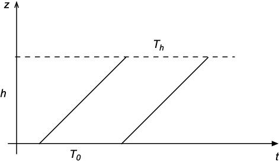
Şekil 40. Çekimsel kırmızıya kayma ve uzay-zaman geometrisi: İki diyagonal çizgi, h yüksekliğine tırmanan iki ardışık ışık atmasıdır. Oluşan paralelkenarın alt kenarı, ışığın alçaktaki periyodu, üst kenarı da h yüksekliğindeki periyodudur; çekimsel kırmızıya kayma bunların eşit olmadığı anlamına gelir! Karşılıklı kenarları eşit olmayan bir paralelkenar, düz uzayda mümkün değildir, ancak eğri uzayda var olabilir.
- Öte yandan, Soru 28’de, bir sistemin genelçekimsel özelliklerinin tek bir rakamla ifade edilemeyeceğini söylemiştik. Dolayısıyla, fotonun “genelçekimsel kütle eşdeğeri”nin E/c2 olduğu ne malum?
- Yine doğru. Ama alternatif bir düşünce deneyi ile, kütle-enerji eşdeğerliğini hiçbir belirsizliğe meydan vermeyecek şekilde kullanarak da aynı sonucu çıkarabiliriz. Bu deneyde, fotonu bir parçacığa ve aynı parçacığı fotona geri dönüştürebilecek bir “makine” da düşünmemiz gerek.. (Bkz. Şekil 35.) Bu düşünce deneyinin59 güzel tarafı, özel görelilikte aslında varolmayan “fotonun genelçekimsel kütle eşdeğeri” kavramını kullanmamızın gerekmemesidir.
59)Bir önceki hesabı aynen tekrar edebiliriz; ancak kullandığımız kütle, daha güvenilir.
35-Nasıl? “Genelçekim kuvveti” aslında yok mu?
- Eşdeğerlik ilkesinin ana sonucu, genelçekimin aslında geometrinin sonucu olduğu, gerçek bir kuvvet olmadığıdır dediniz. Bunu biraz açar mısınız? Yani “genelçekim kuvveti” aslında yok mu?
- Yine bir örnek vereyim. Hiç ABD’ye uçtun mu? Ya da bir tanıdığın uçtu mu? İstanbul’dan ABD’ye giden uçakların büyük çoğunluğu New York’a uçar ve İstanbul ile New York yaklaşık aynı enlemdedir. Yani İstanbul’dan sürekli tam batıya giderek, Şekil 36’daki gibi, New York’a ulaşabilirsin... Ama uçaklar bu yolu takip etmezler, Şekil 37’deki gibi uçarlar... Sence neden?
- Okyanus üzeri uçuşu mümkün olduğu kadar kısaltmak, yani okyanusu en dar yerinden geçmek için olabilir mi?
- Hiç fena değil... Ama dikkat et, okyanus üzerindeki kesim de eğri görünüyor...
- “Görünüyor” dediğinize göre, az sonra aslında eğri olmadığını söyleyeceksiniz herhalde...
- Bir bakıma öyle... Şekil 37’deki yol, İstanbul-New York arasındaki en kısa yoldur. Dünyanın yüzeyi düz olmadığı için, şekiller yanıltıcı oluyor. Eline bir dünya küresi alıp, İstanbul-New York arasına bir ip gerersen, en kısa yolun İngiltere-İrlanda-İzlanda üzerinden geçtiğini görebilirsin.
- İki nokta arasındaki en kısa yol, bir doğru değil midir?
- Evet, düz uzayda öyle... Ama dünya yüzeyinde aynı tanım meridyenler, ekvator ve Şekil 34’teki gibi yollar için geçerli. Ve bu tanımdan daha iyisi yok. Dolayısıyla bu çizgiler, dünya yüzeyinin oluşturduğu iki boyutlu uzayın “doğru”larından...
Ancak, konumuzla ilgili can alıcı nokta şu: Şekil 36-37’deki tür bir harita (koordinat sistemi) üzerinde bakınca, uçak mümkün olan en “doğru” yolu izlediği halde, sanki uçağı ekvatora doğru çeken bir kuvvet varmış gibi uçağın enlemi önce büyüyor, sonra küçülüyor...
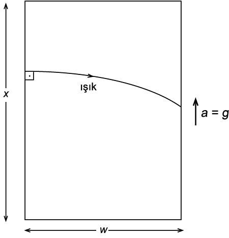
Şekil 41. Eşdeğerlik ilkesi ve ışığın bir genelçekim alanında sapışı.
Soru 22’de, özel görelilikte üzerine kuvvet etki etmeyen cisimlerin uzay-zamanda birer doğru boyunca, yani iki noktayı bağlayan en kısa yol üzerinde hareket ettiklerini konuşmuştuk. Eğri uzay-zamanda da bu geçerlidir, ancak bu en kısa yollar, bizim kullandığımız koordinat sistemlerinde, sanki bir kuvvet etkisindeymiş gibi görünebilir.
- Koordinat sistemimizi değiştirelim o zaman...
- Eğri bir uzay-zamanı kapsayacak eylemsiz, yani kartezyen bir koordinat sistemi bulunamaz ki...
36-Eğri uzayın düz uzaydan farkları nelerdir?
- Eğri uzay derken tam olarak ne kastediyoruz? Düz uzaydan farkı ne?
- Önce düz uzayın ne olduğunu söyleyeyim: Öklid geometrisinin geçerli olduğu uzay. Yani üçgenin iç açıları toplamı 180°, paralel doğrular kesişmiyor filan. Eğri uzay ise bu özelliklerden en az birini ihlal eden uzaylara deniyor.
- Nasıl yani? Bir üçgenin iç açılarının toplamı zaten her zaman 180° değil mi?
- Düz uzayda evet. Eğri uzayda şart değil. Örneğin dünya üzerine bir köşesi kuzey kutbunda, bir köşesi yaklaşık Ekvador’da, bir köşesi yaklaşık Gabon’da olan Şekil 38’deki gibi bir üçgen çiz. Bunun üç iç açısı da 90°, dolayısıyla toplamları 270 derecedir.
- Ama o bir üçgen değil ki! Yamuk yumuk bir şey...
- Üçgeni bir tanımlar mısın?
- Hımm... Sanırım, birbiriyle kesişen üç doğrunun sınırladığı alan...
- Tamam işte... Ekvator ve iki meridyen senin üçgeninin sınırları... Bir önceki soruda, “doğru” tanımının küre yüzeyinde bu eğrileri verdiğini hatırla... Aslında “doğru” kavramını yalnızca düz uzayda kullanıp, herhangi bir uzayda aynı tanımı uygulayarak elde ettiğimiz yollara (eğrilere) jeodezik diyoruz. Dolayısıyla doğrular, düz uzayların jeodezikleri oluyor
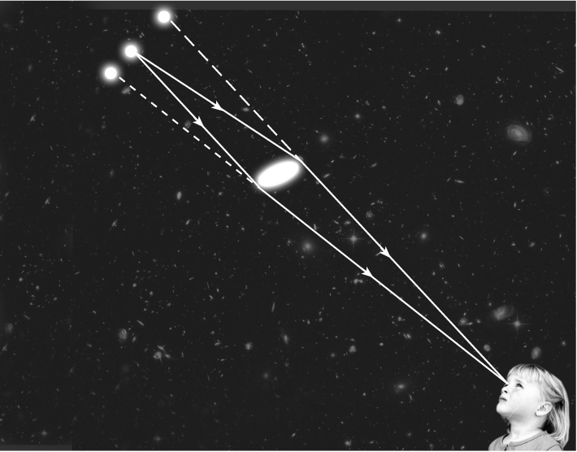
Şekil 42. Güçlü mercekleme. Bu örnekte, uzaktaki kuasarın iki görüntüsü görülüyor.
Sonuç olarak yukarıda tarif ettiğim üçgen, küre yüzeyi için gayet geçerli bir üçgen, ancak iç açılarının toplamı 180°’den büyük! Ayrıca, küre yüzeyinde paralel doğrular da kesişebiliyor: İki komşu meridyenin ikisi de ekvatora dik olduğundan, ekvator civarında paralel kabul edilebilirler. Ancak, bunlar kutupta kesişir. Bu iki özellik, küre yüzeyinin eğri bir uzay olduğunu işaret ediyor.
- Eh, aslında eline alınca gayet güzel görülebiliyor eğri olduğu... Küre, silindir...
- Hayır! Silindir eğri değil!
- Nasıl yani?
- Önemli olan iki boyutlu yüzeyin üç boyut içine nasıl yerleştiği (teknik deyimle gömüldüğü) değil; Öklid geometrisinin kurallarını sağlayıp sağlamadığı. Yani üçgenlerin açıları, dairelerin alanları, doğruların paralellik ilişkileri vb. düz uzay gibi mi? Silindir yüzeyi için bunların hepsi doğru.
Bu konuda düşünmenin bir şekli de, söz konusu uzayla kartezyen koordinatlı bir uzay arasında her bakımdan (yani alanlar, açılar...) bire bir eşleme yapılıp yapılamayacağını düşünmek. İki boyut için bunu kolayca hayal edebiliriz: Bir kâğıdı bu yüzeye buruşturmadan sarabiliyor musun, saramıyor musun? Çeşitli eşyaları paket yaparken bunu fark etmişsindir…
- Silindire sararım, küreye saramam... Sanırım yufka açılırken, yufkanın merdaneye sarılması da benzer bir örnek.
- İşte o kâğıda çizdiğin herhangi bir şekil, düz uzay kurallarını sağlar; onu silindire sarınca hiçbir şey değişmez; ne açılar, ne yüzölçümleri … Ama bir küreye kâğıdı aynı şekilde saramazsın; ancak kâğıt yerine yine düz, ama elastik bir kumaş ile başlarsan, bazı yerlerini gerip uzatarak kumaşı küreye giydirebilirsin. Ancak, bu gerdirmeler, uzatmalar, yüzölçümlerini ve/veya açıları bozar.
Bunun tersi de geçerlidir. Kürenin yüzeyini düz bir zemine sermeye çalışırsan da bazı yerleri germek, bazı yerleri büzmek zorunda kalır; yine yüzölçümlerini ve/veya açıları bozarsın. Harita yapmak tam da budur, yani küresel dünya yüzeyini düz kâğıda -bir ölçekle çarparak- ser
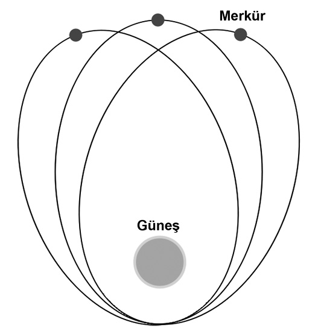
Şekil 43. Merkür’ün günberisinin hareketi. Gezegen yörüngeleri Kepler’in elipslerinden çok küçük sapmalar gösterir. Yörüngenin eliptikliği ve özellikle turdan tura günberi ve günötenin değişimi, gözle fark edilebilmeleri için abartılı olarak çizilmiştir.
mek; bu yüzden hiçbir harita doğru bir temsil olmaz, örneğin bir Mercator haritasında, Şekil 39’a bak, Grönland, Afrika’dan büyük görünür.
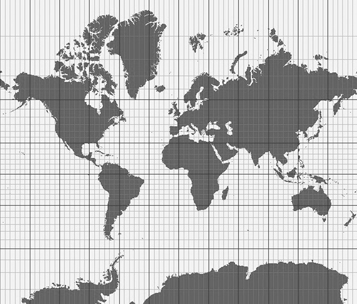
Şekil 39. Mercator projeksiyonu ile yapılmış bir dünya haritası. 2 milyon km2’lik Grönland’ın 30 milyon km2’lik Afrika’dan büyük görünmesine dikkat edin. Bu veya benzeri gerçekdışılıklar, düz olmayan küre yüzeyinin düz kâğıda tüm özelliklerini koruyarak aktarılamamasının bir sonucudur.
Sonuç olarak silindir yüzeyindeki geometrik ilişkiler düz kâğıt ile tamamen aynıdır, dolayısıyla silindir yüzeyi (her ne kadar daha yüksek boyutlu uzayın içine eğri olarak yerleşmiş ise de) düzdür deriz. Kürenin yüzeyinde ise, geometrik ilişkiler düz kâğıttakinden farklı, o yüzden küre eğri bir (iki boyutlu) uzaydır.
Tekrar vurgulamak istiyorum, yüzey içindeki geometrik ilişkiler önemli, üçüncü boyuta çıkmak gerekmiyor. Yüzeyde yaşayan, zıplayamayan ve kazamayan akıllı karıncalar düşünebilirsin, bunlar yalnızca bu geometrik ilişkileri, yani açıları ve alanları ölçerek, yaşadıkları yüzeyin düz olup olmadığına karar verebilirler.
- Yani dünyanın küre olduğunu anlamak için uzaya çıkmak gerekmiyor…
- Kesinlikle… Yüzeyde ölçeceğimiz mesafeler bize geometriyi söyler.
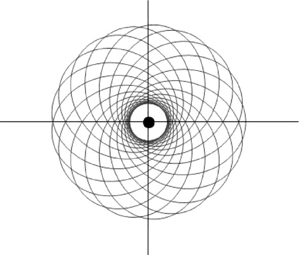
Şekil 44. Çok yoğun bir “yıldızın” (belki bir kara deliğin) yakınındaki bir cismin olası yörüngelerinden biri. Tüm olası yörüngeler böyle estetik görünmezler...
- Peki düz ya da eğri olma durumlarının bir matematiksel karşılığı var mı?
- Var tabii… Geometriyi betimleyen metrik dediğimiz bir matematiksel nesne var. Bu, birbirine çok yakın iki noktanın arasındaki mesafenin karesini bu noktaların koordinat değerlerinin farkları cinsinden veren bir ifade. Metrik, bir matris ile temsil edilebiliyor. (Çünkü koordinat eksenleri dik değilse, mesafenin karesini yalnızca Pisagor teoremi gibi karelerin toplamı cinsinden bulamıyoruz; kaç boyuttaysak o sayıda koordinat farkının, kendisi ve diğer koordinat farklarıyla çarpımlarına ihtiyacımız var.) İfade koordinat değerlerinin farkları cinsinden olduğu için, koordinat sistemi değişirse, metrik de değişiyor. Halbuki uzay aynı uzay.
İşte, bir uzay için eğer metriği temsil eden matrisin birim matris olduğu (yani yalnızca köşegeninde 1’ler olup, diğer elemanlarının sıfır olacağı, dolayısıyla mesafenin karesinin Pisagor teoremi gibi hesaplanacağı) bir koordinat sistemi bulunabiliyorsa, o uzay düzdür ve o koordinat sistemine kartezyen denir.
- Ama bir uzay için sonsuz sayıda koordinat sistemi kullanılabilir; dolayısıyla bir uzay sonsuz sayıda birbirinden farklı metrik ile betimlenebilir...
- Bu doğru. Elimizde olabilecek iki metrik ifadesinin aslında aynı uzayı betimleyip betimleyemediklerine nasıl kesin olarak karar verileceği, diferansiyel geometri dediğimiz matematik dalının en önemli sorunlarındandır. Bunun için de, koordinat sistemlerinden bağımsız olan büyüklükler bulmaya çalışırız...
- Uzay düz ise bile, eğer garip bir koordinat sistemi kullanılıyorsa, düz olduğu belli olmaz. Peki, sonsuz sayıdaki koordinat sistemi arasından kartezyen olanı nasıl bulacağız?
- Tarif, kartezyen sistemin bulunabileceğine dayalı olmasına rağmen, neyse ki uzayın düz olup olmadığını anlamanın olası tüm koordinat sistemlerini taramaktan daha garantili bir yolu var: “Riemann eğrilik tensörü” dediğimiz bir matematiksel nesneyi hesaplarız, eğer o sıfırsa uzay düzdür, yoksa değildir. Bu tensörün n boyutta
n2(n2-1)/12 bağımsız bileşeni vardır; yani iki boyutta bir, üç boyutta altı tane, ama boyut sayısı arttıkça karmaşıklaşır. Ayrıca formülü de bu söyleşi için fazla karmaşık, girmeyelim istersen.
37-Eğri uzay-zaman ne demek?
- Peki zaman boyutunu da ekleyince, uzay-zaman dediğimiz yapı oluşuyor. Bu kavramların ne kadarını oraya taşıyabiliyoruz?
- Hepsini. Tabii zaman boyutu söz konusu olduğunda, ufak tefek farklılıklar giriyor işin içine. Uzay-zaman metriği birbirine çok yakın iki nokta için mesafenin karesini değil; daha önce, özellikle 30. Soru’da bahsettiğimiz uzay-zaman aralığının karesini veriyor. Tabii noktaların koordinat değerlerinin -zaman dahil- farkları cinsinden. Bu bir tanım değişikliği değil, tanım genelleştirilmesi; yani zaman sabit alındığında salt uzay metriğine indirgeniyor. Düz uzay-zaman tanımı da çok benzer: Metriği temsil eden matrisin yalnızca köşegeninde -1 ya da +1’ler olup, diğer elemanlarının sıfır olacağı bir koordinat sistemi bulunabiliyorsa, o uzay-zaman düzdür ve o koordinat sistemine kartezyen denir. Ve düz bir uzay-zaman için hesaplanan Riemann eğrilik tensörü sıfır çıkar.
Aynı şekilde bir önceki soruda konuştuğumuz jeodezik kavramı da uzay-zamana aktarılabilir: İki noktayı bağlayan jeodezik, uzay-zaman aralığı komşu eğrilere göre en kısa ya da en uzun olan eğridir.
- Neden yalnızca en kısa değil?
- Çünkü uzay-zaman aralığı her zaman mesafe değil; bazen süre de olabiliyor. 30. Soru’da aralıkları uzaysal, zamansal ve ışıksal olarak üçe ayırmıştık; uzaysal aralıklar için jeodezik genellikle en kısa mesafeye karşılık gelen yol; zamansal aralıklar için ise en uzun süreye…60
60)Türev bilenler için: Bir fonksiyonun türevi yalnızca çukur noktalarında değil, tepe noktalarında da sıfırdır. Jeodeziklerin sağladığı denklem de bir fonksiyonun türevini sıfırlayan denkleme benzer, yani hem en kısa eğri, hem en uzun eğri çözümleri olabilir.
- Bunlar biraz matematiksel oldu... Soru 36’daki gibi üçgenler filan cinsinden bir tarif de var mı?
- Genelde o şekilde düşünülmezse de, örnekler bulunabilir... Bir grafikte eksenlerden biri zaman olunca, açılara anlam vermek biraz zor; ama uzunluklar hâlâ mesafe veya süre olarak anlamlandırılabiliyor. Örneğin, bir eğriyi zamanda öteleyerek bir tür “paralelkenar” inşa edip, bunun karşılıklı kenarlarının eşit olmaları gerekmediğini görmek mümkün; hatta bu tür bir akıl yürütme ile genelçekimin düz uzayda betimlenemeyeceğini bile anlayabiliriz.
- Nasıl?
- Şekil 40’a bak. Şekildeki iki diyagonal çizgi, h yüksekliğine tırmanan iki ardışık ışık atmasının uzay-zamandaki yollarını gösteriyor. Oluşan paralelkenarın alt kenarı, ışığın alçaktaki periyodu, üst kenarı da h yüksekliğindeki periyodudur; çekimsel kırmızıya kayma bunların eşit olmadığı61 anlamına gelir! Karşılıklı kenarları eşit olmayan bir paralelkenar, düz uzayda mümkün değildir, ancak eğri uzayda var olabilir.
61)Yukarıda zaman daha uzun. Bu olgu, ikizler paradoksunu anlamanın alternatif bir yolunu gösterir bize: Tayyar geri dönerse, ivmelenmiş olması gerekir. Bu da bir süre için sabit bit çekim alanında Tayyar’ın aşağıda, Dünya ve Durmuş’un yukarıda olmaları demektir. Bunun sonucu da Dünya ve Durmuş’un Tayyar’dan daha hızlı yaşlanmalarıdır.
Bu akıl yürütme bize gösteriyor ki, düz uzay-zaman genelçekim ile uyumlu değil. 34. Soru’da genelçekim etkisini uzay-zamanın geometrisine atfedebileceğimizi söylemiştik; şimdi görüyoruz ki, buna mecburuz...
- Bu atıf, kolay ifade edilebilir bir şekilde mi?
- Newton’un birinci yasasının uzay-zamandaki ifadesini hatırlıyor musun? 22. Soru’da konuşmuştuk; “Üzerine kuvvet etki etmeyen cisimler (uzay-zamanda) bir doğru boyunca hareket ederler” idi. Ama 36. Soru’da da “doğru”nun düz uzaylara özgü bir özel hal olduğunu, daha genel kavramın jeodezik olduğunu gördük.
Bunlar ışığında varılan yasa ise şu: Üzerine kuvvet etki etmeyen cisimler (genel bir uzay-zamanda) bir jeodezik boyunca hareket ederler. Bu arada, zamansal yörüngeler için (ki 30. Soru’da tüm kütleli cisimlerin bu tür yörüngeleri izleyeceğini konuştuk) jeodezik, uzay-zamandaki iki nokta arasında, en büyük özzamanı veren yörüngedir...
- Peki, cisimlerin hareketlerini geometri belirliyor... Geometriyi ne belirliyor? “Evrenimiz böyle” mi, yoksa geometri değişebilir mi?
- 33. Soru’nun sonunda konuştuğumuz gibi geometriyi, maddenin 10 farklı özelliğinin (enerji ve momentum yoğunlukları, basınç...) uzay-zamandaki dağılımları, Einstein denklemleri aracılığıyla belirler. Wheeler’in anlatımıyla: Madde, uzay-zamana nasıl eğrileceğini söyler, eğrilik maddeye nasıl hareket edeceğini...
38-“Genelçekim” ışığı saptırır mı?
- Bu arada, bizim ivmelenen asansörle ilgili bir şey takıldı aklıma. Biz hep ışığın - ya da fotonun- düşey gidişini düşündük. Yatay giderse ne olacak?
- Işık yatay başlarsa, ivmelenen asansörde tam karşı noktaya değil, onun biraz altına varır (Şekil 41), çünkü ışık karşıya geçene kadar, karşı duvar biraz hızlandığı için, yukarı doğru ışıktan daha fazla gitmiştir. Eşdeğerlik ilkesi bize bu durumun genelçekim alanına eşdeğer olduğunu söylediğine göre, bir genelçekim alanında da ışık sapacaktır. Ancak, bu sapma bir laboratuvar deneyinde ölçmek için fazla küçüktür.62 Dolayısıyla, ölçülebilecek büyüklükte bir sapma için, kuvvetli bir çekim ve/veya ışığın bu alanda uzun mesafe kat etmesi gerekir. Bu şartlar yakın çevrede ancak Güneş’in yüzünü sıyıran bir ışın için yerine gelir.
62)Hesap şöyle: Işığın asansörü yatayda geçme süresi: t ≈ w/c. Bu süre içinde asansörün ivmeden dolayı gittiği ekstra mesafe: x = (1/2)gt2 ≈ gw2/(2c2), dolayısıyla sapma açısı θ ≈ x/w ≈ gw/(2c2) olarak bulunur. (radyan cinsinden) 10 m genişliğinde bir oda için, x atom çekirdeği boyutlarında çıkar...
- Güneş yüzeyini sıyıran bir ışın, ancak arka plandaki bir yıldızdan gelebilir. Ama Güneş’i görebiliyorken - yani gündüz- yıldızları göremeyiz ki...
- Haklısın; nadir görülen bir durum hariç: Tam Güneş tutulması sırasında yıldızları görebilirsin... Bu yüzden, bu hesap, ancak böyle bir tutulma sırasında sınanabilir.
Bu durum için hesabımızı yaparsak, yaklaşık 0,9 açı saniyelik (bir derece, 60 açı dakikasına, o da 60 açı saniyesine bölünür) bir sapma bekleriz. Çok küçük bir sapma, ama ölçülemeyecek kadar küçük değil. Ancak, tam Güneş tutulmaları genellikle dünyanın ücra köşelerinde birkaç dakikalığına gözlemlenebildiğinden, gözlem biraz gecikti. 1914’te bir tutulmayı gözlemek için Rusya’ya giden bir ekip, 1. Dünya Savaşı’nın çıkmasıyla esir alındı ve gözlem yapamadı. Bir sonraki gözlem için 1919’da Eddington’ın iki ekibi yola çıktığında, Einstein sapma hesabını genel görelilik ile tekrarlayıp, ilk hesabın iki mislini, yani 1,75 açı saniyesini bulalı dört yıl olmuştu.
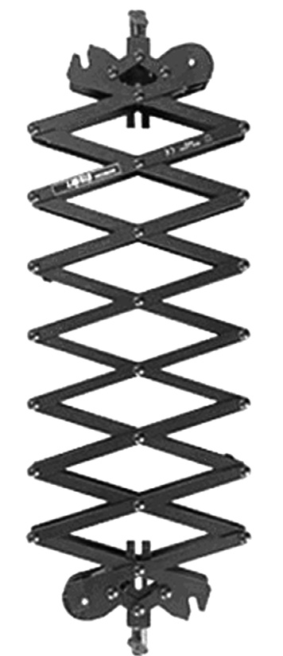
Şekil 46. Bir pantograf. Düzenek uzatılırken, herhangi bir nokta, diğerlerinin uzaklaşma hızını mesafeye orantılı görür; aynen Hubble kanunu gibi.
- İlkinde hesap hatası mı vardı?
- Hayır ama, o hesapta ne jeodezik var, ne uzay-zaman geometrisi... Aslında sorun, fotona “genelçekimsel kütle eşdeğeri” atamaya çalışmaktan ve daha önce dediğimiz gibi (28. Soru), bir cismin çekimsel özelliklerinin aslında tek rakamla ifade edilemeyecek olmasından kaynaklanıyor. Burada, hareket yönü ile “çekim alanı” yönünün aynı olup olmaması fark ediyor; tesadüfen, yönler aynı olunca cevap doğru çıkıyor, ama dik olunca yanlış. Bu yüzden çekimsel kırmızıya kaymada, üçüncü, foton-parçacık dönüştürücü makineli düşünce deneyi önemli ve gerçek genel göreliliği kullanmadığımız halde, sonucu doğru bulduğumuzdan emin olmamızı sağlıyor.
- Peki, ölçüm ne verdi? 0,9 mu, 1,75 mi?
- 1,75 tabii. Ve 32. Soru’da konuştuğumuz gibi, bu ölçüm, o zamanın ünlü bilimcilerinin övgüleri ve bunların dünya basınında yayımlanması, Einstein’ı dünya çapında şöhrete ulaştırdı. Bu övgüler, genel göreliliğin matematiksel olarak çok estetik bir kuram olmasından başka, bu ışık sapmasının daha önceki kuramlarca öngörülmeyen ve gözlemsel olarak keşfedilmemiş bir olgu olmasından (ve 1914 gözlem ekibinin makûs talihinden!) kaynaklandı.
- Güneş’ten başka ışığı ölçülebilir derecede saptıran nesne yok mu?
- Çok nadir de olsa böyle nesnelere rastlanıyor; buna çekimsel mercek etkisi, bu nesnelere de çekimsel mercek deniyor. Örneğin, çok uzaktaki parlak bir cismin ışığı, aramızdaki büyük bir gökada ya da gökada kümesi tarafından saptırılabiliyor ve böylece çarpık ya da çoklu görüntüler oluşabiliyor; buna güçlü mercekleme (Şekil 42’ye bak) deniyor. İkinci bir olasılık olarak, gökadamızın halesindeki (yıldızları gördüğümüz düzlem haricinde, merkezden uzak bölge) yoğun, küçük cisimler (beyaz cüce, nötron yıldızı, kara delik gibi) bir yıldızın önünden geçerken, onun ışığını çok kısa bir süre için bize odaklayıp, yıldızın görünen parlaklığının artmasına neden olabilirler; buna mikromercekleme denir. Bunların nadir olduğunu söylemiştim; iyi ki de böyle—
- Neden iyi ki böyle?
- Eğer sık rastlansaydı, yani tüm ışıklar öteye-beriye sapsaydı, astronomik gözlemler imkânsızlaşırdı; çünkü optik, ışığın boşlukta doğru çizgi (ya da evreni oluşturan eğri uzay-zamanda olabildiği kadar doğru çizgi), üzerinde ilerlemesi üzerine kurulmuştur. Aslında, kozmoloji konuşurken bahsedeceğiz; büyük ölçeklerde evrenin eğriliği çok “düzgün”dür; bu sayede uzak gökadaların görüntüleri çarpık olmuyor ve bu mesafelerde anlamlı gözlem yapılabiliyor.
39-Gezegen yörüngelerinde genel görelilik ne fark yaratır?
- Işığın sapması, genel görelilik ile gündeme gelen, öncesinde kimsenin düşünmediği bir etki demek... Peki, önceden Newton genelçekim kuramı çerçevesinde incelenmiş olgularda yeni kuram bir değişikliğe sebep oldu mu? Örneğin, gezegen yörüngelerinde...
- Güneş etrafında dolaşan bir gezegenin yörüngesinin görelilik öncesi fiziğe göre elips olduğunu hatırla. Hani Kepler fark etmiş, Newton da genelçekim yasasının öyle gerektirdiğini bulmuştu... Ancak bu gerektirme, noktasal Güneş ve bir noktasal gezegen varsayımlarıyla tam olarak geçerlidir; bu varsayımlardan sapma olduğu ölçüde elipsten de sapma beklenir.
- Pek de fazla bir sapma yok herhalde ki, liselerde, hatta üniversitelerdeki giriş seviyesindeki derslerde Kepler yasaları okutuluyor...
- Eh, bu doğru tabii. Ama önce bir konuşalım, bu sapma, ne şekilde ifade edilebilir? Gösterilebiliyor ki, kuvvet yalnızca iki cisim arasındaki mesafeye bağlı ise, gezegen Güneş’ten en uzak mesafeden başlayıp, Güneş’in etrafında bir tur atıp, tekrar Güneş’ten en uzak mesafeye ulaştığında, tam olarak aynı noktaya dönmüş olmuyor; Şekil 43’te görebileceğin gibi, bu örnekte, yörüngedeki dönüş yönünde biraz ileride bir noktaya varıyor; yani açısal olarak hareketi 360°’yi biraz geçiyor.
Sabit eliptik yörüngeden bu küçük sapmayı, elipsin yavaşça dönmesi şeklinde düşünüp, sapma miktarını da elipsin tur başına dönüş açısı olarak ifade edebiliriz. Ama sapma o kadar küçük ki, yüzyıl başına açı olarak ifade ediliyor. Örneğin, Merkür için elipsin dönüşü, bir yüzyılda 5600 açı saniyesi, yani iki dereceden biraz az.
- Bu sapmaya yol açabilecek üç etki saydınız, bunların hepsi de sapmaya aynı derecede mi katkı yapıyor?
- Hayır. Aslına bakarsan, Güneş’in ve gezegenlerin noktasal olmamalarının önemi yok, çünkü bir kürenin - daha doğrusu küresel simetriye sahip bir cismin- çekimsel etkisi, aynı kütleli bir noktaya eşdeğer; tabii ki kürenin dışı için. Sapmayı yaratan asıl etki, Güneş Sistemi’nde tek bir gezegen olmaması. Yani gezegenler ana olarak Güneş’in etkisi altındalar, ama uzaktan uzağa, belli belirsiz birbirlerini de etkiliyorlar. Bundan en çok etkilenen Merkür oluyor, çünkü saptırıcı etki Güneş’e yaklaştıkça artıyor.
İşin ilginci ve etkileyici olanı, 19. yüzyıl ortalarına gelindiğinde, Merkür için bu olayın hem duyarlı gözlemleri, hem de bilinen etkilerin hesapları yapılmış ve arada bir yüzyılda 43 açı saniyelik bir fark bulunmuş. Yüzyılda 43 açı saniyesi, yani bir derecenin altmışta birinden az bir miktar açıklanamayan dönme! Bu, önemlice bir problem olarak fizikçilerin ve gökbilimcilerin önünde duruyordu.
Tabii, iki olası çıkış yolu var. Ya gözlemlerinizde bir eksik var, ya kuramınızda. Bu problemi en etraflıca ortaya koyan Le Verrier’in önerdiği çözüm, hesaba katmadığımız bir gezegenin varlığı olmuş, adını da Vulcan koymuş. Bu da gayet anlaşılabilir bir yaklaşım, çünkü aynı Le Verrier, bir süre önce Uranüs’ün yörüngesindeki sapmaları analiz ederek bir gezegenin daha var olması gerektiği sonucuna varmış ve onun söylediği koordinatlara bakan gözlemciler gezegeni adeta elleriyle koymuş gibi bulmuşlardı; bu gezegene sonradan Neptün adı verilmiştir. Bu yüzden Le Verrier “kalemiyle gezegen keşfeden adam” diye anılır.
Ancak, Merkür’den daha iç bir yörüngede olduğu düşünülen Vulcan, hiçbir zaman bulunamadı. Bu kalan 43 açı saniyesinin (bir yüzyılda!) açıklanması, sonunda genel görelilik sayesinde oldu. Einstein’ın bu etkiyi hesaplayıp da tam da açıklanamayan miktarı bulması, genel göreliliğin ilk başarılarından biridir.
- O kadar küçük bir etki ki bu, genel görelilik, gezegen yörüngelerini neredeyse hiç etkilemiyor diyebiliriz galiba...
- Ama bu, bizim Güneş Sistemi’nde böyle; çünkü Güneş’in çekim alanı çok kuvvetli değil, daha doğrusu, Güneş uzay-zamanı çok az eğiyor. Uzay-zamanı daha fazla eğebilmek için bir yıldız ya daha kütleli ya da aynı kütleyle daha küçük olmalı. Aslında Güneş’i (kütlesini değiştirmeden) küçültsek de Merkür veya Dünya civarındaki eğrilik değişmez, ancak şu anda Güneş’in içinde kalan hacmin eğriliği artar, bu bölgenin bir kısmı da yıldızın dışında olacaktır. İşte böyle, yeterince eğri bir bölgede dolaşan bir cismin yörüngesinin elips ile bir ilgisi kalmaz, bir çiçek şekline dönüşür. (Örnek, Şekil 44.)
40-Genel göreliliğin uygulama alanları nelerdir?
- Ama yine de, demek ki bizim Güneş Sistemi’nde genel göreliliğin pek bir etkisi yok; zaten böyle olduğunu 4. Soru’nun başında da konuşmuştuk. Yıldız ışığı sapması ve gezegen günberilerinin hareketleri, pratiğe neredeyse hiç etkisi olmayan, bize kendini göstermeyen, aksine ölçebilmek için büyük çaba göstermemiz gereken olgular. Peki, genel göreliliğin yalnızca ilke olarak değil, gerçekten, yani ölçülebilir büyüklüklerde hatırı sayılır fark yarattığı durumlar nelerdir? Zaten birini az önce konuştuk, yoğun cisimlere yakın hareket. Başka ne var?
- Evet, bizim yakınlarımızda etkiler küçük. Etkisi küçük ya da önemsiz derken, “geçersiz” demeyi kastetmediğimizi hatırlayalım; yalnızca yapılabilecek deney veya gözlemler için genel görelilik çerçevesinde yapılacak hesapların sayısal sonuçlarının, Newton fiziği çerçevesinde yapılacak hesapların sayısal sonuçlarına çok yakın olmasını kastediyoruz. Ama genel göreliliğin etkilerinin yakınlarımızda küçük olması, illa günlük hayatımız için hiçbir önemi yok demek değil; çok hassaslık gerektiren uygulamalarda, küçük etkiler sonucu değiştirebilir. Bunu daha sonra konuşuruz; önce genel göreliliğin senin deyiminle, önemli fark yarattığı bağlamları bir sıralayalım...
Birinci bağlam, yalnızca yoğun cisimlere yakın hareket değil, yoğun cisimlere yakın uzay-zamanın yapısı aynı zamanda. Genel göreliliğin önemli olması için ihtiyacımız olan yoğunluk, atom çekirdeklerinin yoğunlukları mertebesinde, yani en yoğun metalin (Osmium, 22,6 g/cm3) 10 katrilyon katı.
- Böyle bir yoğunluğu nerede bulabiliriz ki? Aslında zor olduğunu tahmin ediyorum, neden zor? Yani maddeyi neden sıkıştıramıyoruz o kadar?
- Neden çok sıkıştıramadığımız sorusunun ayrıntılı cevabını biraz sonraya bırakalım; şimdilik, madde sıkıştıkça, sıkışmaya artan bir basınçla direnç gösteriyor ve bu artışı o yoğunluklara kadar yenebilecek bir kompresörümüz yok demekle yetinelim. Doğada ise bu yoğunluğu ancak nötron yıldızları dediğimiz cisimlerde bulabiliyoruz. Ancak, genel göreliliğin çapıcı öngörüsü şu: Maddenin sıkışması -şu veya bu şekilde- belli şartları sağladığı zaman, aralarındaki çekime artık hiçbir basınç direnemiyor ve madde bir anlamda bir nokta olana kadar çöküyor. Bu da uzay-zaman geometrisinde çok önemli değişikliklere yol açıyor; buna kara delik diyoruz.
- Hani genelçekim diye bir kuvvet yoktu?
- Benim “çekim” demem lafın gelişi, çoğu zaman Newton fiziği kullanmaktan kalan bir alışkanlık. Aslında kastettiğim, “yeterince yoğun bir cisim, bulunduğu civarda uzay-zamanı o derece eğebilir ki, onu oluşturan parçalar, üzerlerine etki edebilecek tüm kuvvetlere rağmen, uzay-zamanda birbirlerine yaklaşan yollar izlerler” demek.
- Herhalde “yoğun cisim” bağlamında bundan ötesi yoktur; yani elimizde nötron yıldızları ve kara delikler var. Peki başka nerede genel görelilik önemli? Yıldızların ya da gökadaların yapısı mesela?
- Hayır, normal (yani hidrojen → helyum nükleer tepkimesiyle ışıyan, bir diğer deyişle “ana kol”) yıldızların, kızıl dev ya da beyaz cüce denen yıldızların; hatta gökadaların yapısında genel görelilik önemli bir rol oynamıyor. (Gökadaların çoğunun merkezinde bulunduğunu düşündüğümüz dev kara delikler hariç -bunu da sonra konuşacağız.) Genel göreliliğin önemli fark yarattığı ikinci bağlam ise, evrenin bir bütün olarak kendisi.
Newton fiziğinde kozmoloji (evrenbilim) biraz belirsiz; evren sonlu mudur, sonsuz mu; durağan mıdır, değil mi; homojen mi, değil mi? Ancak 18’inci yüzyılda, Olbers paradoksu denen bir akıl yürütme ile, evrenin hem durağan, hem sonsuz, hem homojen olamayacağı anlaşıldı.
- Nasıl?
- Bir an için böyle olabildiğini varsayalım. Evren homojen ise, her yerde yerel özellikleri yaklaşık olarak aynıdır, dolayısıyla yıldızların ortalama ışıma güçlerinin de evrenin içindeki konumlarına göre değişmeyeceğini kabul etmek gerekir. Şimdi, dünyadan r uzaklığındaki tipik bir yıldızın dünyada gözlenecek parlaklığı, yani ışık şiddeti P/(4πr2) ile verilir; çünkü yıldızın ışıma gücü P, 4πr2’lik bir yüzeye dağılıyor. Evreni dünya merkezli, iç yarıçapı r, kalınlığı d olan küresel kabuk hacimlerine ayırırsak (Şekil 45’e bak), bir küresel kabuktaki yıldız sayısı (birim hacimdeki yıldız sayısı n olmak üzere) yaklaşık n4πr2d olur. Bunların dünyaya yolladığı toplam ışık şiddeti, bu iki rakamın çarpımı, yani ndP olur, yani bütün kabuklar için aynı. Ama bu kabuklardan sonsuz tane var! Dolayısıyla dünyaya gelen toplam ışık şiddeti sonsuz olmalı!
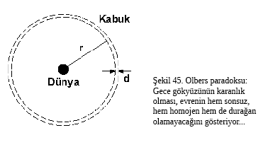
- Yıldızlar birbirlerinin ışığını bir ölçüde engellemeyecek mi?
- Evet, engellerler. Bu etki hesaba katılınca, şiddet artık sonsuz olmaz, ama yine de gökyüzünün her noktasının Güneş’in yüzeyi kadar -yani bakamayacağımız kadar- parlak olması gerektiği anlaşılır. Yani tekrar ediyorum, gecenin karanlığı, bize evrenin hem durağan, hem sonsuz, hem homojen olamayacağını söyler. Bu üç özellikten en az biri gitmeli; halbuki Avrupalı aydınlar bu üç özelliği de çok seviyorlardı...
- Hangisi gidiyor?
- Homojenlik kalıyor, sonsuzluğu henüz bilmiyoruz. Ama durağanlık kesin gidiyor, çünkü evren genleşiyor.